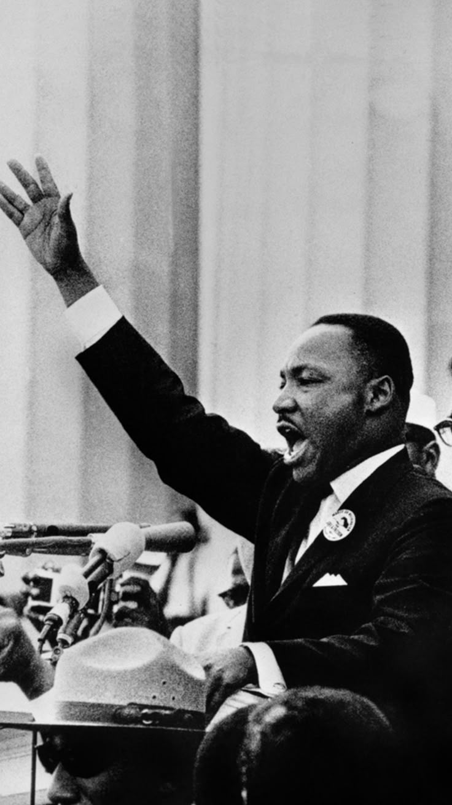
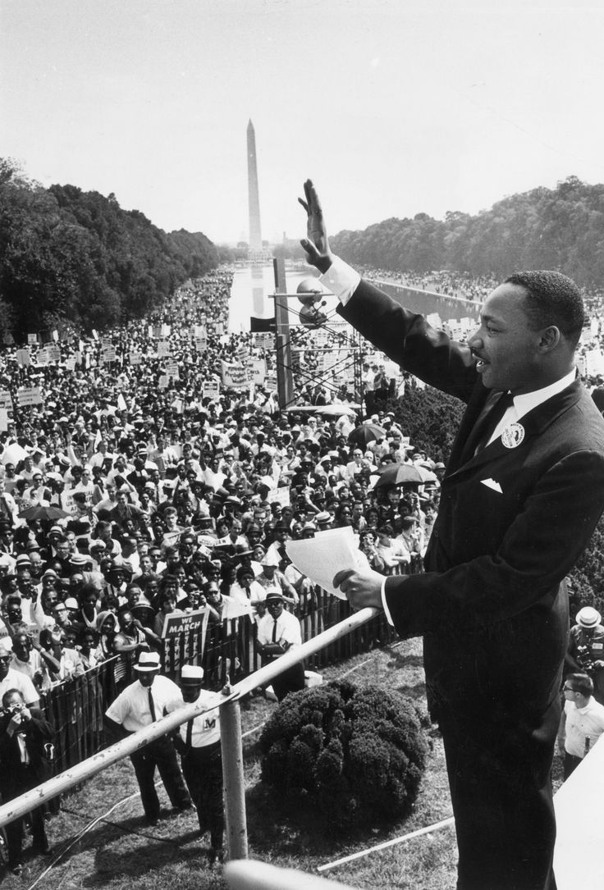

Who Was Martin Luther King Jr.?
Martin Luther King Jr. was an American Baptist minister, theologian, and civil rights leader who became the most influential spokesperson for the nonviolent struggle against racial segregation and injustice in the United States. Born in Atlanta, Georgia, in 1929, King rose from the pulpit of a Southern Baptist church to national prominence within a few short years, guiding a mass movement that reshaped American law, politics, and moral consciousness. His leadership combined the discipline of a trained theologian with the practical demands of organizing, negotiating, and enduring imprisonment for the cause of civil rights.
King is most closely associated with the philosophy of nonviolent resistance, a method of social and political struggle that rejected both passive submission to injustice and retaliatory violence against oppressors. Drawing on Christian ethics, the example of Mahatma Gandhi, and the American tradition of civil disobedience, King argued that unearned suffering, accepted without hatred, could awaken the conscience of a nation and transform even hardened opponents. This philosophy was not simply a tactic for him; it was a comprehensive way of life rooted in love, justice, and human dignity.
A central concern of King's thought was the vision of the Beloved Community, an ideal society in which racism, poverty, and violence would be replaced by justice, equality, and genuine reconciliation between peoples. He insisted that the goal of the civil rights movement was never simply to defeat white segregationists but to redeem American society as a whole, including those who upheld segregation. This redemptive aim distinguished King's philosophy from movements built primarily on the logic of conquest or domination.
King is particularly important because he translated abstract philosophical and theological ideas into a disciplined program of mass action. His leadership of the Montgomery Bus Boycott, the Birmingham campaign, the March on Washington, and the Selma voting-rights marches demonstrated how nonviolent philosophy could be organized at scale to confront entrenched legal and social injustice. His writings, sermons, and public addresses articulated a coherent moral and political framework that extended well beyond any single campaign or piece of legislation.
His influence extended far beyond the period in which he lived. Later civil rights leaders, political theorists, and movements for social justice around the world continued to study, debate, and apply King's ideas concerning nonviolence, justice, and the moral responsibilities of citizens under unjust law. As a result, Martin Luther King Jr. remains one of the central figures for understanding both the history of the American civil rights movement and the broader philosophical tradition of nonviolent political ethics.
Martin Luther King Jr.: Quick Facts
- Full name — Martin Luther King Jr.
- Born — January 15, 1929, Atlanta, Georgia, United States
- Died — April 4, 1968, Memphis, Tennessee, United States
- Philosophical/theological tradition — Christian social ethics, nonviolent resistance, personalism
- Known for — Leading the American civil rights movement, the philosophy of nonviolent resistance, and the vision of the Beloved Community
- Central concept — Nonviolent resistance as a method of social and political transformation
- Key organization — Founder and president of the Southern Christian Leadership Conference (SCLC)
- Important concepts — Beloved Community, agape love, civil disobedience, the "arc of the moral universe"
- Major writings — "Letter from Birmingham Jail," Stride Toward Freedom, Why We Can't Wait, Where Do We Go from Here
- Recognition — Nobel Peace Prize, 1964; Presidential Medal of Freedom (posthumous), 1977; Congressional Gold Medal (posthumous), 2004
- Historical importance — One of the most influential leaders in the history of the American civil rights movement and modern political ethics
Martin Luther King Jr.'s Early Life and Education

Martin Luther King Jr. was born Michael King Jr. on January 15, 1929, in Atlanta, Georgia, into a family deeply rooted in the Black Baptist church. His father, Martin Luther King Sr., was the pastor of Ebenezer Baptist Church, and his mother, Alberta Williams King, came from a family with its own history of religious and civic leadership in Atlanta. Growing up in a household defined by faith, education, and community responsibility gave King an early model of leadership that combined moral seriousness with practical engagement in public life.
King experienced the realities of racial segregation directly during his childhood in the American South. He later recalled becoming aware, at a young age, that a childhood friend from a white family was no longer permitted to play with him once they began attending separate schools, an early and formative encounter with the structures of Jim Crow segregation. These experiences gave King a personal as well as intellectual understanding of racial injustice that would later inform his theological and philosophical development.
King proved to be an academically gifted student, skipping grades and entering Morehouse College in Atlanta at the age of fifteen. At Morehouse, he studied under influential mentors, including college president Benjamin Mays, who encouraged him to view the ministry as a vehicle for intellectual and social engagement rather than mere piety. It was during his time at Morehouse that King began seriously considering the ministry as a calling capable of addressing both spiritual and social concerns.
After graduating from Morehouse, King pursued further theological education at Crozer Theological Seminary in Pennsylvania, where he distinguished himself academically and was elected president of a predominantly white student body. At Crozer, King was introduced to a wide range of theological and philosophical traditions, including liberal Protestant theology, the Social Gospel movement, and the writings of Reinhold Niebuhr, all of which contributed to his developing synthesis of Christian ethics and social responsibility.
King went on to pursue doctoral studies in systematic theology at Boston University, where he encountered personalism, a philosophical school emphasizing the inherent dignity and worth of every person as a reflection of divine personality. This philosophical framework would remain central to King's later thought, providing a metaphysical foundation for his insistence that every human being, regardless of race, possessed irreducible moral worth deserving of respect and justice.
Family, Faith, and the Black Baptist Church Tradition
The Black Baptist church tradition profoundly shaped King's intellectual and spiritual formation from earliest childhood. Ebenezer Baptist Church, where his father and grandfather had both served as pastors, was not merely a place of worship but a center of community organization, education, and civic leadership within Atlanta's Black community. This institutional context gave King an early model in which religious faith and social action were understood as inseparable rather than competing commitments.
King's relationship with his father, "Daddy King," was complex and formative. The elder King was a strong-willed and demanding figure who had risen from rural poverty to become an influential pastor and civic leader, and he expected similarly serious commitment from his children. This relationship instilled in the younger King both a deep respect for the institutional church and, at times, a desire to develop his own theological and philosophical voice distinct from his father's more traditional style of ministry.
King married Coretta Scott, a gifted vocalist and activist in her own right, in 1953. Coretta Scott King would prove to be an essential partner throughout King's public life, engaging in activism, fundraising, and public speaking on behalf of the civil rights movement while also managing the demands of raising their four children amid constant threats and surveillance. After King's assassination, she continued this work for decades, founding the King Center and working to establish his birthday as a national holiday.
In 1954, King accepted his first pastorate at Dexter Avenue Baptist Church in Montgomery, Alabama, a decision that placed him at the center of what would soon become the opening chapter of the modern civil rights movement. His position as a young, well-educated pastor in a Southern Black congregation gave him both the moral authority and institutional platform needed to assume a leadership role once the Montgomery bus boycott began the following year.
Throughout his public career, King consistently framed his activism in explicitly religious terms, describing the civil rights struggle as a moral and spiritual crusade rather than simply a political campaign. His sermons drew on biblical imagery of exodus, exile, and promised land to interpret the experience of Black Americans, giving the movement a theological depth that resonated powerfully within Black church communities across the South and, increasingly, the nation as a whole.
The Montgomery Bus Boycott and King's Rise to Leadership
The Montgomery Bus Boycott began in December 1955 after Rosa Parks, an active member of the local NAACP chapter, was arrested for refusing to give up her seat to a white passenger on a segregated city bus. Local Black community leaders organized a boycott of the Montgomery bus system to protest this treatment and the broader system of segregated public transportation, and the newly arrived, relatively unknown pastor Martin Luther King Jr. was selected to lead the Montgomery Improvement Association coordinating the campaign.
King's leadership of the boycott, which lasted 381 days, thrust him into national prominence and provided the first major test of his emerging philosophy of nonviolent resistance. Despite personal threats, the bombing of his home, and his own arrest, King consistently urged participants to maintain nonviolent discipline, framing the boycott not merely as an economic protest but as a moral demonstration capable of transforming both segregationist policy and the conscience of the wider society.
The boycott succeeded in December 1956 when the United States Supreme Court affirmed a lower court ruling that segregated public buses were unconstitutional, following the case of Browder v. Gayle. This legal victory demonstrated that disciplined nonviolent mass action could achieve concrete legal and political change, establishing a template that King and allied organizations would refine and apply throughout the subsequent decade of civil rights activism.
The Montgomery campaign also marked King's practical education in the mechanics of nonviolent resistance, including nonviolence training for participants, coordination with legal teams pursuing parallel court challenges, and the cultivation of media coverage to communicate the moral stakes of the struggle to a national audience. These organizational lessons would prove essential to the larger campaigns King would later lead in Birmingham, Selma, and elsewhere.
Perhaps most importantly, Montgomery crystallized King's public identity as a leader who combined theological conviction with practical political strategy. The boycott demonstrated that mass nonviolent resistance, properly organized and disciplined, could successfully challenge entrenched segregationist law, giving King both the moral authority and the practical experience to expand his leadership onto the national stage in the years that followed.
Founding the Southern Christian Leadership Conference
Following the success of the Montgomery Bus Boycott, King and fellow ministers established the Southern Christian Leadership Conference (SCLC) in 1957 to coordinate nonviolent civil rights activity across the American South. The organization was explicitly rooted in the Black church, drawing on the existing networks, resources, and moral authority of Southern Black congregations to organize sustained nonviolent campaigns against segregation and disenfranchisement.
King served as SCLC's first president, a position he held for the remainder of his life, and the organization became the primary institutional vehicle through which he articulated and implemented his philosophy of nonviolent resistance at a regional and national scale. SCLC distinguished itself from other civil rights organizations of the period, such as the NAACP's emphasis on legal strategy or the student-led Student Nonviolent Coordinating Committee's emphasis on grassroots organizing, through its particular emphasis on mass direct action rooted explicitly in Christian ethical principles.
Under King's leadership, SCLC developed a distinctive method of campaign organizing that combined careful strategic planning with disciplined nonviolent training for participants. Campaigns typically involved extensive preparation, including negotiations with local authorities, nonviolence workshops for volunteers, and coordinated efforts to attract national media attention to instances of segregationist violence, a strategy King believed essential to mobilizing broader public and federal support for civil rights legislation.
SCLC's relationship with other civil rights organizations was not always harmonious, and King navigated ongoing tensions concerning strategy, tactics, and leadership with groups such as SNCC, whose younger members sometimes viewed SCLC's more centralized, minister-led structure as overly cautious or insufficiently responsive to grassroots concerns. These internal debates reflected broader disagreements within the civil rights movement about the proper balance between nonviolent discipline, direct confrontation, and more radical approaches to racial justice.
Despite these tensions, SCLC under King's leadership organized some of the most consequential campaigns of the civil rights era, including the Birmingham campaign, the March on Washington, and the Selma voting rights marches. The organization's explicitly religious character allowed King to frame these campaigns in moral and theological terms that resonated deeply within Black communities while also appealing to the conscience of a broader American public increasingly confronted with images of segregationist violence.
What Is Martin Luther King Jr.'s Philosophy of Nonviolence?
King's philosophy of nonviolent resistance held that social and political change could be achieved not through passive submission to injustice nor through violent retaliation against oppressors, but through active, disciplined resistance that refused to inflict harm even while accepting suffering. King distinguished this approach sharply from mere passivity, insisting that nonviolent resistance was itself a form of vigorous, sustained struggle requiring courage, strategic organization, and moral discipline rather than resignation.
A central feature of King's nonviolent philosophy was the willingness to accept unearned suffering without retaliation, a practice King believed possessed redemptive power capable of transforming both the individual participant and the broader society witnessing the injustice inflicted upon them. When nonviolent protesters were beaten, arrested, or otherwise harmed while maintaining nonviolent discipline, King argued, this suffering exposed the moral bankruptcy of segregationist violence to a watching public in ways that violent resistance could not achieve.
King grounded this philosophy explicitly in the Christian concept of agape love, an unconditional, redemptive love extended even toward one's opponents, distinguished from romantic affection or mere personal liking. King insisted that nonviolent resisters must maintain love and goodwill toward segregationists even while vigorously opposing segregationist policies, a distinction between opposing unjust systems and hating the individuals who upheld them that remained central throughout his public teaching and preaching.
King articulated his philosophy of nonviolence through six key principles, frequently summarized in his writings and speeches: nonviolence is not passive but requires active courage; it seeks to win friendship and understanding rather than humiliate the opponent; it attacks the forces of evil rather than persons doing evil; it accepts suffering without retaliation; it avoids not only external physical violence but also internal violence of spirit such as hatred; and it rests on the conviction that the universe is ultimately on the side of justice.
This comprehensive philosophy distinguished King's approach from purely tactical or strategic uses of nonviolent methods. For King, nonviolence was simultaneously a practical method for achieving concrete political change and a spiritual discipline capable of transforming the character of participants themselves. This dual character, at once strategic and spiritual, gave King's philosophy of nonviolence a depth and durability that allowed it to sustain a mass movement through years of violent repression.
The Influence of Mahatma Gandhi and Satyagraha
King's philosophy of nonviolent resistance owed a profound intellectual debt to Mahatma Gandhi and his concept of Satyagraha, or "truth-force," the method of nonviolent resistance Gandhi developed and employed in India's struggle for independence from British colonial rule. King first encountered Gandhian thought as a seminary student and later described the experience of studying Gandhi's philosophy as transformative, providing the practical method through which his Christian ethical commitments could be translated into effective social action.
Where King had previously understood Christian love primarily as an individual ethical ideal, his study of Gandhi revealed how this same principle of love could be organized into a disciplined method of collective political resistance capable of confronting entrenched systems of injustice. King described Gandhi as providing the "method" for social reform while Christianity provided the "spirit and motivation," a synthesis he considered essential to the practical success of the American civil rights movement.
In 1959, King traveled to India, where he met with Gandhi's associates and studied the practical application of Satyagraha in the Indian independence movement firsthand. This visit deepened King's understanding of nonviolent resistance as a comprehensive philosophy of social change rather than a merely tactical choice, reinforcing his conviction that the methods successfully employed against British colonial rule could be adapted to confront racial segregation in the American context.
King and Gandhi shared several core convictions: that means and ends were inseparably connected, so that unjust or violent methods could never produce a genuinely just outcome; that suffering voluntarily accepted possessed transformative moral power; and that the ultimate goal of resistance was reconciliation with the opponent rather than their humiliation or destruction. These shared commitments gave King's American civil rights philosophy a clear lineage within a broader global tradition of nonviolent political ethics.
Despite these deep affinities, King's nonviolent philosophy was not simply an American transplantation of Gandhian method. King integrated Gandhi's practical strategy with distinctly Christian theological commitments, American constitutional traditions, and the specific institutional resources of the Black church, producing a synthesis suited to the particular circumstances of the American civil rights struggle rather than a direct replication of the Indian independence movement.
Henry David Thoreau and the Tradition of Civil Disobedience
King also drew significantly on the American tradition of civil disobedience, particularly as articulated by Henry David Thoreau in his influential essay on resistance to civil government. King first encountered Thoreau's writing as a college student and later described being "fascinated" by the idea that individuals possessed a moral obligation to resist unjust laws rather than passively comply with them, a principle King considered foundational to his later activism.
Thoreau's argument that individuals must not allow themselves to become instruments of injustice, even when commanded by legitimate governmental authority, provided King with an important American philosophical precedent for his own insistence that segregation laws, however legally enacted, lacked genuine moral authority and could rightly be resisted through deliberate, public, nonviolent violation.
King's most systematic articulation of this position appears in his "Letter from Birmingham Jail," written in 1963 while imprisoned for participating in nonviolent demonstrations. In this letter, King distinguished between just and unjust laws, arguing that individuals possessed both a legal and moral responsibility to obey just laws while maintaining an equally serious moral responsibility to disobey unjust laws openly, lovingly, and with a willingness to accept the legal penalty for doing so.
This willingness to accept legal punishment distinguished King's conception of civil disobedience from mere lawbreaking or evasion. King argued that publicly accepting arrest and imprisonment for violating unjust laws demonstrated genuine respect for the rule of law in principle while exposing the injustice of particular laws in practice, a strategy intended to appeal to the conscience of moderate and uncommitted observers rather than alienate them.
The combination of Thoreau's philosophy of individual conscience with Gandhi's organized method of mass Satyagraha gave King's civil disobedience a distinctive character: simultaneously personal and collective, principled and strategic. This synthesis allowed King to present nonviolent lawbreaking not as anarchic defiance but as a disciplined moral practice consistent with, rather than opposed to, deeper American constitutional and religious traditions.
What Is the Beloved Community?
The Beloved Community represents King's positive vision of the ultimate goal toward which nonviolent resistance aimed, a reconciled society characterized by justice, equal opportunity, and genuine love between all persons regardless of race. King borrowed the term from philosopher Josiah Royce but developed it into a distinctive theological and political ideal central to his understanding of what successful civil rights activism should ultimately achieve.
Crucially, King insisted that the Beloved Community was not simply a society in which Black Americans achieved formal legal equality while racial resentment and division persisted beneath the surface. Rather, it represented a genuinely transformed society in which former adversaries were reconciled through mutual understanding and love, a far more ambitious goal than mere legal desegregation or the redistribution of political power from one racial group to another.
This vision distinguished King's philosophy from approaches to social change grounded primarily in the logic of power, domination, or retribution. King consistently argued that the aim of nonviolent resistance was never to defeat or humiliate segregationists but to "awaken a sense of moral shame" in the opponent, opening the possibility of genuine reconciliation once injustice had been overcome, a goal requiring the continued moral engagement of former opponents rather than their exclusion.
King grounded the Beloved Community theologically in the Christian doctrine of universal human dignity and the ultimate interrelation of all persons, famously articulated in his observation that injustice anywhere constituted a threat to justice everywhere, given what he described as an inescapable network of mutuality binding all people together in a single garment of destiny. This theological vision gave the Beloved Community a cosmic, not merely political, significance within King's broader philosophy.
Although King did not live to see the Beloved Community realized, the concept continued to shape his later activism, including his expanding concern with economic justice and his opposition to the Vietnam War, both of which he understood as necessary extensions of the same underlying commitment to human dignity and reconciliation that had originally motivated his civil rights activism. The Beloved Community remains one of King's most enduring philosophical contributions.
The Birmingham Campaign and the Letter from Birmingham Jail
In 1963, King and SCLC launched the Birmingham campaign, targeting one of the most rigidly segregated cities in the American South through a coordinated program of sit-ins, marches, and boycotts designed to pressure local businesses and government officials into desegregation. The campaign strategically employed what organizers called "creative tension," deliberately provoking confrontation with segregationist authorities in order to expose the underlying injustice of the segregationist system to national and international audiences.
King's arrest during the Birmingham campaign, following his decision to defy a court injunction against demonstrations, produced one of his most important written works, the "Letter from Birmingham Jail." Written in response to local white clergymen who had publicly criticized the protests as untimely and extreme, the letter offered King's most systematic written defense of nonviolent direct action and civil disobedience against the charge that the movement should instead pursue gradual, purely legal reform.
The Birmingham campaign gained decisive national attention when Birmingham's Commissioner of Public Safety, Eugene "Bull" Connor, ordered police to use fire hoses and attack dogs against nonviolent demonstrators, including children participating in the Children's Crusade marches. Televised images of this violence shocked much of the American public and significantly increased pressure on the federal government to address civil rights legislation more forcefully than it previously had.
The campaign ultimately produced a desegregation agreement with Birmingham's business community, though implementation remained contested and was followed by continued violence, including the bombing of the Sixteenth Street Baptist Church later that year, which killed four young girls. Despite this tragic aftermath, the Birmingham campaign is widely regarded as a turning point that significantly advanced the national momentum toward comprehensive civil rights legislation.
Birmingham demonstrated King's mature strategic thinking regarding the relationship between nonviolent direct action and media coverage. King understood that dramatic, disciplined nonviolent confrontation with segregationist violence, when captured by national media, could generate the moral pressure needed to move public opinion and federal policy in ways that quieter forms of legal advocacy alone had not achieved in the preceding years of slower civil rights progress.
The March on Washington for Jobs and Freedom

The March on Washington for Jobs and Freedom, held on August 28, 1963, brought together an estimated quarter of a million demonstrators in the largest civil rights demonstration in American history to that point. The march was organized through the cooperation of major civil rights organizations, including SCLC, the NAACP, SNCC, and the Urban League, and combined demands for civil rights legislation with demands for economic justice and expanded employment opportunities for Black Americans.
King delivered the closing address of the march from the steps of the Lincoln Memorial, articulating a vision of American racial justice grounded in the country's founding constitutional principles while calling for their genuine, rather than merely formal, fulfillment. The speech connected specific policy demands concerning employment, housing, and voting rights to a broader moral vision of national redemption, framing civil rights reform as consistent with, rather than opposed to, authentic American ideals.
The march succeeded in significantly increasing national pressure on the Kennedy administration and Congress to pursue comprehensive civil rights legislation, building on momentum generated earlier that year by the Birmingham campaign. The demonstration's disciplined, peaceful character, despite widespread public anxiety about potential violence, itself served as a powerful demonstration of the practical effectiveness of King's nonviolent philosophy at a mass national scale.
The march also highlighted ongoing tensions within the civil rights coalition regarding strategy and tone, particularly concerning a planned speech by SNCC leader John Lewis, whose original draft was considered more confrontational than organizers believed appropriate for the occasion and was revised following negotiations among march leaders. These internal negotiations reflected broader debates within the movement about the proper balance between moral appeal and more assertive political confrontation.
The march's legacy extended well beyond its immediate political impact, becoming a defining symbol of the American civil rights movement and establishing King as its foremost national spokesperson. The event's combination of mass participation, disciplined nonviolence, and moral eloquence exemplified the practical and rhetorical synthesis that characterized King's broader approach to nonviolent social change throughout his public career.
King's Role in the Civil Rights Act of 1964
The Civil Rights Act of 1964, which outlawed discrimination on the basis of race, color, religion, sex, or national origin in employment and public accommodations, was substantially shaped by the sustained pressure generated through King's nonviolent campaigns, particularly the Birmingham campaign and the March on Washington. While King did not draft the legislation himself, his activism was widely credited with creating the political conditions necessary for its passage.
King maintained ongoing engagement with the Kennedy and later Johnson administrations throughout the legislative process, meeting with federal officials to advocate for comprehensive rather than incremental civil rights reform. His insistence on the moral urgency of federal action, articulated consistently throughout his speeches and writings, helped shift public and congressional opinion toward supporting more far-reaching legislation than many political observers initially believed achievable.
Following President Kennedy's assassination in November 1963, President Lyndon B. Johnson made passage of the civil rights bill a central legislative priority, ultimately securing its passage through Congress despite significant Southern Democratic opposition. King publicly praised the legislation's passage while continuing to emphasize that legal equality alone would not resolve the deeper economic and social dimensions of racial injustice that remained his ongoing concern.
The Civil Rights Act represented a significant validation of King's underlying strategic philosophy, demonstrating that sustained, disciplined nonviolent pressure combined with effective media strategy and coalition-building could produce substantial federal legislative change. This success reinforced King's conviction that nonviolent resistance, properly organized, offered a genuinely effective method for achieving concrete political transformation rather than merely symbolic moral protest.
At the same time, King recognized that the Civil Rights Act left significant gaps, particularly regarding voting rights, which remained largely unaddressed by the 1964 legislation despite continued disenfranchisement of Black voters throughout much of the South. This recognition led directly to King's subsequent focus on voting rights, culminating in the Selma campaign the following year.
The Selma to Montgomery Marches
In early 1965, King and SCLC, working alongside SNCC and local Alabama activists, launched a campaign centered in Selma, Alabama, to protest the systematic disenfranchisement of Black voters throughout the Deep South despite the formal constitutional right to vote. Selma was selected strategically because of its notoriously restrictive voter registration practices and the confrontational record of local law enforcement under Sheriff Jim Clark.
The campaign's defining moment occurred on March 7, 1965, later known as "Bloody Sunday," when Alabama state troopers and local law enforcement violently attacked peaceful marchers attempting to cross the Edmund Pettus Bridge on the first of what was intended to be a march from Selma to the state capital in Montgomery. Televised footage of the brutal assault on nonviolent demonstrators, including future congressman John Lewis, generated intense national outrage and significantly accelerated support for federal voting rights legislation.
Following Bloody Sunday, King led a symbolic second march to the bridge before turning back in compliance with a federal court order, a controversial decision that drew criticism from some more militant activists but reflected King's characteristic strategic caution regarding legal confrontation. A third march, protected by federalized National Guard troops following a favorable court ruling, successfully completed the full march from Selma to Montgomery later that month, culminating in a mass rally at the state capitol.
The Selma campaign directly contributed to the passage of the Voting Rights Act of 1965, which President Johnson signed into law that August, prohibiting racial discrimination in voting practices and authorizing federal oversight of voter registration in jurisdictions with histories of discriminatory practices. King regarded the Voting Rights Act, alongside the Civil Rights Act of the previous year, as among the most significant legislative achievements of the civil rights movement he had helped lead.
Selma also illustrated the continuing costs borne by nonviolent activists, including the murder of activist Jimmie Lee Jackson, whose death had helped precipitate the original march, and the later killing of civil rights volunteer Viola Liuzzo following the successful Montgomery march. These deaths underscored the genuine physical risks King and fellow activists accepted in pursuing nonviolent resistance against a segregationist system willing to employ lethal violence in its defense.
The Nobel Peace Prize and International Recognition
In 1964, King was awarded the Nobel Peace Prize in recognition of his leadership of the nonviolent struggle for civil rights in the United States, becoming, at the age of thirty-five, the youngest recipient of the prize at that time. The award represented significant international recognition of King's philosophy of nonviolent resistance as a substantial contribution to global political ethics, comparable in significance to other major movements for peace and justice recognized by the Nobel committee.
In his Nobel lecture and acceptance speech, King explicitly framed the American civil rights struggle within a broader global context of decolonization and the pursuit of human dignity, connecting the experience of Black Americans to anticolonial movements then reshaping Africa and Asia. This global framing reflected King's growing conviction that racial injustice in America could not be fully understood in isolation from broader international struggles against oppression and inequality.
King directed the substantial monetary award associated with the Nobel Prize toward funding the ongoing work of the civil rights movement rather than retaining it for personal benefit, consistent with his broader ethic of personal sacrifice for the movement's collective goals. This decision reflected King's consistent practice throughout his public career of subordinating personal material interest to the demands of the cause he led.
The Nobel Prize significantly enhanced King's international stature and provided a platform from which he increasingly addressed issues beyond the immediate scope of American civil rights law, including global poverty, economic inequality, and, controversially within some segments of the civil rights coalition, American military involvement in Vietnam. The recognition thus marked something of a turning point toward the more expansive social and economic concerns of King's later activism.
The award also placed King under increased scrutiny from domestic critics, including the FBI, which had already begun extensive surveillance of King's activities under the direction of Director J. Edgar Hoover. This surveillance, which included wiretapping and attempts to discredit King personally, would continue and intensify throughout the remainder of King's public career, reflecting the deep institutional hostility his activism continued to provoke even amid growing international acclaim.
King's Later Focus on Poverty and Economic Justice
In the years following the passage of the Civil Rights and Voting Rights Acts, King increasingly turned his attention toward economic justice, arguing that formal legal equality alone could not resolve the deeper structural poverty affecting Black Americans and poor people of all races throughout the United States. King came to believe that the movement's next phase required confronting economic inequality directly rather than resting on the legislative achievements of the movement's earlier legal-rights phase.
This shift reflected King's growing engagement with structural analyses of poverty and economic inequality, moving beyond his earlier focus on legal segregation toward what he increasingly described as the interconnected "triple evils" of racism, poverty, and militarism. King argued that genuine justice required addressing these interconnected systems together rather than treating racial discrimination as separable from broader economic structures perpetuating inequality across racial lines.
King's 1966 Chicago Freedom Movement represented an early attempt to extend civil rights organizing methods to address housing discrimination and economic inequality in Northern urban contexts, a campaign that proved considerably more difficult than the movement's Southern campaigns due to the less overt, more structural character of Northern housing and employment discrimination, and the complex political machine King confronted in Chicago.
King's evolving economic thought drew him toward positions increasingly critical of unregulated capitalism, though he continued to reject both Soviet-style communism and unrestrained free-market capitalism in favor of what he described as a synthesis addressing the genuine insights and limitations of both systems. This economic analysis reflected King's consistent theological conviction that structures perpetuating poverty represented as serious a moral violation of human dignity as explicit racial segregation.
These economic concerns culminated in King's planning of the Poor People's Campaign, intended to bring poor Americans of all races to Washington to demand comprehensive federal action against poverty, a campaign King was still organizing at the time of his assassination in April 1968. This unfinished economic agenda represents an important, though often less emphasized, dimension of King's broader philosophical and political legacy.
King's Opposition to the Vietnam War
King's public opposition to the Vietnam War, articulated most fully in his April 1967 address titled "Beyond Vietnam," represented a significant and controversial extension of his broader philosophical commitments to nonviolence and human dignity into the realm of American foreign policy. King argued that he could not credibly preach nonviolence to disenfranchised communities at home while remaining silent about his own government's use of large-scale violence abroad.
King connected his opposition to the war directly to his broader concern with economic justice, observing that the war diverted federal resources away from anti-poverty programs while disproportionately drafting poor and working-class Americans, including a disproportionate number of Black soldiers, to fight and die in a conflict King considered morally unjustified and strategically counterproductive to American interests and international standing.
This position generated significant controversy, drawing sharp criticism from the Johnson administration, mainstream media outlets, and even some civil rights allies who feared that King's antiwar activism would fracture the fragile political coalition supporting continued civil rights legislation and alienate President Johnson, who had proven a crucial ally on domestic civil rights matters despite his commitment to continuing American involvement in Vietnam.
King nonetheless maintained his antiwar position, framing it as a natural and necessary extension of his consistent commitment to nonviolence as a comprehensive ethical principle rather than a tactic limited to domestic racial politics. He argued that authentic moral consistency required opposing violence and injustice wherever it occurred, whether inflicted by segregationist police at home or by American military forces abroad.
King's Vietnam stance illustrates an important dimension of his mature political philosophy: his conviction that nonviolence, properly understood, could not be selectively applied to convenient domestic causes while remaining silent about inconvenient questions of international violence and injustice. This position cost King significant political capital in his final years but reflected the internal logic of his broader ethical and theological commitments.
The Poor People's Campaign and King's Assassination in Memphis
In early 1968, King traveled to Memphis, Tennessee, to support a strike by Black sanitation workers protesting unsafe working conditions and unequal pay, a campaign King viewed as directly connected to his broader concern with economic justice and workers' dignity. The Memphis sanitation strike represented exactly the kind of economic justice campaign King hoped to expand nationally through the planned Poor People's Campaign.
On April 3, 1968, King delivered an address in Memphis reflecting on themes of struggle, mortality, and the ultimate triumph of justice, an address later remembered as unusually prophetic given the events of the following day. The speech reflected King's long-standing awareness of the serious physical dangers he faced as a result of his activism, having survived previous assassination attempts and constant threats throughout more than a decade of public leadership.
On April 4, 1968, King was assassinated by James Earl Ray while standing on the balcony of the Lorraine Motel in Memphis. His death at the age of thirty-nine sent shockwaves throughout the United States and the world, triggering widespread grief and, in numerous American cities, civil unrest among communities devastated by the loss of the movement's most prominent nonviolent leader.
King's assassination occurred while the Poor People's Campaign remained in its planning stages, and his death significantly altered the subsequent course of the campaign, which continued under other SCLC leadership but without the singular moral authority King had provided throughout the preceding decade of civil rights activism. His death is widely regarded as marking the effective conclusion of the classical phase of the American civil rights movement.
The circumstances and aftermath of King's assassination, including subsequent controversies concerning the investigation and James Earl Ray's guilty plea, later retraction, and the King family's own expressed doubts about the official account, remain subjects of continued historical discussion. Regardless of these unresolved questions, King's assassination is universally recognized as one of the most consequential losses in the history of American civil rights leadership.
FBI Surveillance and Government Opposition to King
Throughout much of his public career, King was subjected to extensive surveillance by the Federal Bureau of Investigation under the direction of Director J. Edgar Hoover, who viewed King and the civil rights movement with deep suspicion, partly reflecting unfounded Cold War-era concerns about potential communist infiltration of the movement through some of King's associates.
The FBI's surveillance program against King, later revealed to have included extensive wiretapping of his phones and hotel rooms, was authorized at senior levels of the federal government and continued for years, generating substantial documentation of King's personal and political activities that the Bureau subsequently attempted to use to discredit him both publicly and within the civil rights coalition itself.
This surveillance program reflected broader institutional hostility toward King's activism from significant portions of the federal government, even as other federal officials, particularly within the Kennedy and Johnson administrations, worked cooperatively with King on specific civil rights legislative priorities. This tension illustrates the genuinely contested and risky political position King occupied throughout his public career.
Congressional investigations conducted in the 1970s, following King's assassination, later confirmed the extent of FBI surveillance and harassment directed against King, contributing to broader reforms of federal intelligence oversight and a fuller historical reckoning with the extent of government opposition King faced even as he pursued a strictly nonviolent and constitutionally grounded program of civil rights reform.
This history of surveillance and institutional hostility provides important context for understanding both the genuine risks King accepted throughout his activism and the broader political resistance the civil rights movement confronted even from institutions of the federal government otherwise formally committed to constitutional principles of equal protection and free political expression.
Martin Luther King Jr. and Malcolm X: Two Approaches to Justice
The philosophical relationship between Martin Luther King Jr. and Malcolm X is often presented in popular discussion as a simple opposition between nonviolent integration and militant separatism, though the actual historical and philosophical relationship between the two leaders was considerably more complex and, particularly in their final years, showed signs of gradual convergence on certain underlying concerns.
King's philosophy emphasized nonviolent resistance grounded in Christian love and the ultimate goal of integration into a reconciled Beloved Community, while Malcolm X, particularly during his years as a spokesperson for the Nation of Islam, emphasized Black self-determination, cultural pride, and the explicit right to armed self-defense against racial violence, rejecting integration as an insufficient response to centuries of systemic racial oppression.
These differing positions reflected genuinely different theological, philosophical, and strategic starting points rather than simply differing temperaments. King's Christian personalism emphasized the shared humanity and redeemability of all persons, including segregationists, while Malcolm X's early Nation of Islam theology emphasized racial separation as a corrective response to what he viewed as an irredeemably racist American society.
Following his 1964 break from the Nation of Islam and subsequent pilgrimage to Mecca, Malcolm X's views evolved considerably, moving toward a more internationalist analysis of racial oppression that showed increasing points of convergence with King's own growing concern with global human rights and economic justice, even as the two leaders continued to disagree regarding the strict philosophical commitment to nonviolence that remained central to King's approach.
Scholars increasingly emphasize that King and Malcolm X, despite their genuine philosophical differences, are best understood as offering complementary rather than simply opposed responses to the shared problem of American racial injustice, each articulating distinct but overlapping visions of Black dignity, self-respect, and liberation that continue to inform contemporary debates about the most effective strategies for pursuing racial justice.
Martin Luther King Jr. and Gandhi: Comparing Nonviolent Traditions
Comparing Martin Luther King Jr. and Mahatma Gandhi reveals both the deep continuity and important differences between two of the twentieth century's most significant nonviolent political movements. Both leaders developed comprehensive philosophies of nonviolent resistance grounded in religious conviction, both successfully organized mass movements against entrenched systems of injustice, and both were ultimately assassinated as a direct consequence of their activism.
Gandhi's Satyagraha was grounded primarily in Hindu and Jain religious concepts, particularly ahimsa, or non-harm, and was directed toward securing Indian national independence from British colonial rule, a struggle against foreign colonial domination rather than domestic racial segregation within an established national polity. King's nonviolence, by contrast, was grounded in Christian theology and personalist philosophy, directed toward achieving full citizenship and equal rights for Black Americans within the existing American constitutional system.
Despite these different religious and political contexts, both leaders shared the conviction that nonviolent resistance represented a superior method to violent revolution, not merely for pragmatic strategic reasons but because of a deeper moral commitment to the inseparability of just means and just ends. Both also emphasized the transformative, redemptive potential of voluntarily accepted suffering as a method of moral and political persuasion directed at the conscience of opponents and bystanders alike.
A significant difference concerns the ultimate political goal each leader pursued: Gandhi sought national independence and the complete withdrawal of foreign colonial authority, while King sought fuller inclusion and genuine equality within an existing national community, a goal requiring not separation but reconciliation between formerly opposed groups who would continue living together as fellow citizens following the resolution of their conflict.
King's direct study of Gandhi, including his 1959 visit to India, demonstrates the conscious, deliberate character of this intellectual inheritance, distinguishing King's nonviolent philosophy from movements that arrived at similar tactical conclusions independently. This acknowledged debt situates King's civil rights activism within a broader twentieth-century global tradition of nonviolent political philosophy extending well beyond the specific American context in which King's own activism unfolded.
Criticisms and Historical Debates About King's Legacy
While King is widely celebrated today, his approach faced significant criticism during his lifetime from multiple directions, including segregationists who viewed his activism as dangerously disruptive, moderate white clergy who urged patience and gradual legal reform rather than direct nonviolent confrontation, and more militant civil rights activists who considered King's strict commitment to nonviolence insufficiently responsive to the urgency and scale of racial injustice.
Younger activists within organizations such as SNCC increasingly questioned King's leadership style and strategic approach during the mid-1960s, particularly as the movement's focus expanded beyond Southern legal segregation toward more structurally entrenched Northern economic and housing discrimination, where King's characteristic methods proved considerably less immediately effective than they had been against explicit Southern Jim Crow laws.
King's opposition to the Vietnam War generated substantial criticism even from some civil rights allies who feared political consequences for the broader movement, illustrating ongoing debates about the proper scope of King's activism and whether his expansion into foreign policy and economic critique represented a necessary extension of consistent moral principle or a strategic overreach risking the movement's hard-won legislative achievements.
Contemporary historical scholarship has also grappled with revelations, drawn partly from FBI surveillance records, concerning aspects of King's personal life that complicate simplified hagiographic portrayals, prompting ongoing scholarly discussion about how to responsibly integrate such evidence into a fuller historical understanding of King without either dismissing his documented personal failings or allowing them to overshadow his substantial public achievements and moral leadership.
These debates illustrate that King, like other historically significant figures, should be understood as a complex human being operating within specific, often difficult, historical circumstances rather than as an uncomplicated moral icon. Acknowledging these historical debates does not diminish King's substantial philosophical and political achievements but rather supports a more historically responsible and intellectually honest understanding of his legacy.
Why Is Martin Luther King Jr. Important?
Martin Luther King Jr. is important because he provided one of the most influential and systematically developed philosophies of nonviolent resistance in modern political history, successfully translating theological and philosophical principles into a mass movement capable of achieving substantial legal and social transformation within the United States during the 1950s and 1960s.
His synthesis of Christian theology, Gandhian Satyagraha, American civil disobedience, and personalist philosophy produced a coherent and practically effective framework for nonviolent social change that continues to influence political movements around the world confronting injustice through nonviolent means, from later civil rights and anti-apartheid movements to contemporary social justice activism.
King is also important for demonstrating the practical effectiveness of nonviolent mass action in achieving concrete legislative change, as evidenced by the direct connection between his campaigns and the passage of the Civil Rights Act of 1964 and the Voting Rights Act of 1965, two of the most consequential pieces of civil rights legislation in American history.
His later expansion of concern toward economic justice and opposition to militarism demonstrated the internal coherence and expansive scope of his underlying philosophical commitments, illustrating how a philosophy initially developed to address specific legal segregation could be consistently extended to confront broader structural injustices affecting poor and working-class people across racial lines, both domestically and internationally.
King's enduring importance ultimately lies in the depth and practical demonstrated effectiveness of his philosophical analysis, and in the continuing relevance of the questions his work raises concerning the relationship between law and justice, the moral obligations of citizens under unjust systems, and the possibility of achieving genuine social transformation through disciplined nonviolent means rather than violent revolution or passive acceptance of injustice.
Martin Luther King Jr.'s Main Philosophical Ideas
King's philosophy can be understood through several interconnected ideas concerning nonviolent resistance, human dignity, justice, and reconciliation. These concepts form a unified ethical and political framework in which the method of resistance, the underlying theological anthropology, and the ultimate social goal are all mutually reinforcing rather than separable commitments.
Nonviolent Resistance
Nonviolent resistance is King's central practical method, combining active, disciplined struggle against injustice with a categorical refusal to inflict violence on opponents. Grounded in Christian love, Gandhian Satyagraha, and American civil disobedience, this method sought to expose injustice and appeal to the conscience of both opponents and observers rather than defeat adversaries through force.
The Beloved Community
The Beloved Community represents King's ultimate social goal, a reconciled society in which justice and genuine love between former adversaries replace both racial oppression and resentment. This vision distinguished King's philosophy from approaches grounded primarily in the redistribution of power, insisting instead on the deeper transformation of relationships between formerly divided groups.
Just and Unjust Law
King's distinction between just and unjust law, articulated most fully in his "Letter from Birmingham Jail," held that individuals possessed a moral obligation to obey just laws while maintaining an equally serious moral obligation to resist unjust laws openly and nonviolently, accepting legal punishment as a demonstration of ultimate respect for law itself.
Human Dignity and Personalism
Grounded in personalist philosophy, King insisted that every human being possessed intrinsic, inviolable worth as a reflection of divine personality, providing the metaphysical foundation for his claim that segregation constituted not merely legal injustice but a fundamental violation of sacred human dignity requiring urgent moral and political correction.
The Interconnection of Justice
King's later thought increasingly emphasized the interconnection of justice across racial, economic, and international dimensions, articulated through his concept of the "triple evils" of racism, poverty, and militarism. This expansive vision held that genuine justice required confronting these interconnected structures together rather than treating racial equality as separable from economic justice and global peace.
Martin Luther King Jr. Explained Simply
King's central philosophical question can be stated simply: how can a society structured by deep and violent injustice be transformed into genuine justice without resorting to violence itself? His answer combined Christian theology, Gandhian method, and American constitutional tradition into a comprehensive philosophy of nonviolent resistance capable of confronting entrenched injustice while preserving the possibility of eventual reconciliation between opposing groups.
His central method was nonviolent resistance: an active, disciplined form of struggle that refused both passive submission to injustice and violent retaliation against oppressors, instead accepting suffering without hatred in order to expose injustice and awaken the conscience of the broader society witnessing that suffering.
- Method — Nonviolent resistance: An active, disciplined struggle against injustice that refuses to inflict harm on opponents while accepting suffering without retaliation, intended to expose injustice and appeal to conscience rather than defeat adversaries by force.
- Foundation — Agape love and human dignity: King grounded nonviolence in Christian agape love and personalist philosophy, insisting that every person possessed inviolable dignity, requiring resisters to oppose unjust systems while maintaining goodwill toward the individuals who upheld them.
- Problem — Unjust law and systemic injustice: King argued that legally enacted segregation and disenfranchisement nonetheless constituted unjust law lacking genuine moral authority, creating a moral obligation to resist such laws openly and nonviolently.
- Path — Civil disobedience and mass organizing: Following Thoreau and Gandhi, King organized disciplined mass campaigns of civil disobedience, combining nonviolent direct action with strategic media engagement to build national pressure for legal and social change.
- Goal — The Beloved Community: King's ultimate aim was not simply legal equality but genuine reconciliation between formerly divided groups, culminating in a "Beloved Community" characterized by justice, equal opportunity, and authentic love between all people.
Put very simply, King's philosophy can be understood as a movement from injustice to reconciliation through disciplined, loving, nonviolent struggle. Rather than choosing between passive acceptance of injustice and violent revolution against it, King articulated and successfully organized a third path capable of transforming both unjust laws and the deeper relationships between formerly opposed communities.
This is why King's philosophy connects several major areas of political and ethical thought. His analysis of power and law explains his theory of civil disobedience, his theological anthropology explains his emphasis on human dignity, his method explains nonviolent direct action, and his ultimate social vision explains the Beloved Community. Together, these ideas form the coherent structure of King's enduring philosophical legacy.
Frequently Asked Questions About Martin Luther King Jr.
Who was Martin Luther King Jr.?
Martin Luther King Jr. was an American Baptist minister and civil rights leader who became the most prominent spokesperson for the nonviolent struggle against racial segregation and discrimination in the United States during the 1950s and 1960s.
What is Martin Luther King Jr. famous for?
King is famous for leading the Montgomery Bus Boycott, founding the Southern Christian Leadership Conference, organizing the March on Washington, and articulating a philosophy of nonviolent resistance grounded in Christian ethics and the vision of the Beloved Community.
What was Martin Luther King Jr.'s philosophy of nonviolence?
King's philosophy of nonviolence held that unearned suffering absorbed without retaliation could transform opponents and society, drawing on Christian love, Gandhian Satyagraha, and Thoreau's civil disobedience to pursue justice without hatred toward persons.
What is the Beloved Community?
The Beloved Community is King's vision of a reconciled society in which justice, equal opportunity, and love of neighbor replace racism, poverty, and violence, achieved through nonviolent struggle rather than domination of one group over another.
Did Martin Luther King Jr. win the Nobel Peace Prize?
Yes. King received the Nobel Peace Prize in 1964 for his leadership of the nonviolent civil rights movement, becoming the youngest recipient of the prize at that time.
How did Martin Luther King Jr. die?
King was assassinated on April 4, 1968, in Memphis, Tennessee, while supporting a sanitation workers' strike, an event that profoundly shaped the later course of the civil rights movement.
What is the difference between Martin Luther King Jr. and Malcolm X?
King advocated integration through disciplined nonviolent resistance grounded in Christian love, while Malcolm X, especially in his early Nation of Islam period, emphasized Black self-determination and defended the right to self-defense, though their positions grew closer near the ends of both their lives.
Did Martin Luther King Jr. only focus on racial segregation?
No. In his later years, King expanded his activism to address poverty and economic injustice through the Poor People's Campaign and publicly opposed the Vietnam War as inconsistent with his broader commitment to nonviolence.
What did Martin Luther King Jr. write in the Letter from Birmingham Jail?
The letter defends nonviolent direct action against criticism from moderate clergy, distinguishing between just and unjust laws and arguing that individuals have a moral duty to resist unjust laws openly and accept the legal consequences.
Related Thinkers and Nonviolent Philosophers
Martin Luther King Jr. belongs to a global tradition of nonviolent political philosophy. Explore thinkers who developed related approaches to justice, resistance, ethics, and social transformation.
Philosophy Branches Connected to King
King's philosophy is especially connected with ethics, political philosophy, and the philosophy of law. His investigation of justice and resistance also raises questions central to philosophy of religion and social philosophy.
Why Martin Luther King Jr. Still Matters
Martin Luther King Jr. remains one of the most important figures in modern political and ethical thought because of the depth and demonstrated practical effectiveness of his philosophy of nonviolent resistance.
His investigation of justice, human dignity, civil disobedience, and reconciliation created a powerful framework for thinking about how societies can confront deep injustice without abandoning moral principle or resorting to violence.
Whether studied as a theologian, a political strategist, or a moral philosopher, King's work continues to occupy a central position in discussions of justice, nonviolence, and the ongoing struggle for human dignity around the world.
Explore Great Philosophers
The Social Gospel and King's Theological Influences
The Social Gospel movement, associated particularly with theologian Walter Rauschenbusch, argued that Christian faith required active engagement with social problems such as poverty, labor exploitation, and inequality rather than concern limited to individual salvation. King encountered this tradition during his seminary training and found in it a theological justification for understanding racial injustice as a matter of urgent religious, not merely political, concern.
King also engaged seriously with the theology of Reinhold Niebuhr, whose "Christian realism" emphasized the persistence of sin and the limits of purely moral appeals in confronting entrenched systems of power. While King ultimately rejected Niebuhr's skepticism toward nonviolence as a practical political method, his engagement with Niebuhr sharpened King's own thinking about the relationship between individual ethics, collective power, and the structural nature of racial injustice in American society.
Personalist philosophy, encountered during his doctoral work at Boston University under professors such as Edgar Sheffield Brightman and L. Harold DeWolf, provided King with a metaphysical framework in which personality itself was the fundamental category of reality, and every person possessed intrinsic and inviolable worth. This philosophical commitment underwrote King's later insistence that segregation was not simply inconvenient or unjust in a narrow legal sense but a fundamental violation of the sacred worth of persons created in the image of God.
King's theological synthesis also drew on the broader tradition of Black liberation theology avant la lettre, even before that term was formally coined, interpreting biblical narratives of bondage and deliverance as directly applicable to the experience of Black Americans under segregation. This interpretive framework allowed King to present the civil rights struggle not as a departure from Christian faith but as its most authentic expression, a claim that carried enormous persuasive power within Black congregations throughout the South.
Taken together, these influences produced a theology that was simultaneously personal and social, individual and structural. King insisted that authentic Christian faith required both inward transformation and outward struggle against unjust systems, a synthesis that distinguished his approach from theologies focused purely on personal piety as well as from purely secular political movements. This integrated vision became the theological backbone of his subsequent activism.